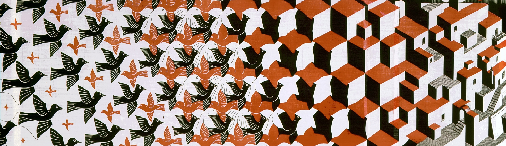

graph LR
s([Start]) --> A
A[Warte auf<br>Weihnachten] --> G[/Geld holen/]
G --> C{Bestes<br>Geschenk?}
C -- Wein --> D[[Einkaufen<br>im Weinladen]]
C -- Socken --> E[[Einkaufen<br>im Kleidungsladen]]
C -- Buch --> F[[Einkaufen<br>im Buchladen]]
D --> e([Ende])
E --> e
F --> e
Programmablauf

A fool with a tool is still a fool.
— Grady Booch
Bevor eine einzige Zeile Code geschrieben — oder ein einziger Prompt formuliert — wird, braucht es ein Design. Programmablaufpläne, auch „Flussdiagramme” genannt, sind dieses Designartefakt. Sie übersetzen ein reales Problem in eine geordnete Schrittfolge und zeigen genau, wo Entscheidungen fallen müssen. Wer zuerst das Flussdiagramm zeichnet, kann danach einen präzisen, vollständigen Prompt formulieren — statt später lange zu iterieren, weil der KI-Code falsche Verzweigungen enthält.
Programmablaufpläne (Flussdiagramme)
Das Flussdiagramm ist das Designartefakt, das vor dem Prompt entsteht. Ein Werkzeug zum Darstellen dieser Schritte sind „Programmablaufpläne”, die allgemein auch als „Flussdiagramme” bezeichnet werden.
Sie bestehen aus einzelnen Elementen, die durch gerichtete Linien in der Ablauffolge verbunden werden. Die Form der Elemente definiert dabei ihre Bedeutung.
Sie beinhalten die grundlegenden Bausteine eines Programms:
- Anweisungen: Aktionen, z.B. das Ausgeben von Text oder das Berechnen von Werten.
- Variablen: Werte, die im Programm verwendet werden.
- Verzweigungen: Entscheidungen, die den Programmfluss ändern.
- Schleifen: Wiederholte Anweisungen bei erfüllter Bedingung.
- Funktionen: Wiederverwendbare Code-Blöcke.
Es gibt Start- und End-Elemente mit runden Ecken. Sie sind die einzigen mit genau einem Ausgang- bzw. genau einem Eingang. Sie werden z.T. weggelassen, wenn Start und Ende durch die Leserichtung klar erkennbar sind.
graph LR
s([Start]) --> e([Ende])
Anweisungen (Statements) werden mit eckigen Elementen dargestellt. Sie können mehrere Eingänge, aber nur einen Ausgang haben. Der Text in dem Element beschreibt die auszuführende Anweisung.
graph LR
s([ ]) --> w[Warte auf Weihnachten]
w --> e([ ])
style s fill:none,stroke:none
style e fill:none,stroke:none
Eingaben und Ausgaben werden durch Parallelogramme dargestellt.
graph LR
s([ ]) --> G[/Geld holen/]
G --> e([ ])
style s fill:none,stroke:none
style e fill:none,stroke:none
if-Anweisungen werden durch einen Entscheidungsdiamanten dargestellt. Sie haben mindestens zwei Ausgänge. Die Bedingung wird in den Diamanten geschrieben, die alternativen Werte der Bedingung (meist Ja/Nein) werden an die ausgehenden Pfeile geschrieben.
graph LR
s([ ]) --> C{Bestes<br>Geschenk?}
C -- Wein --> D[ ]
C -- Socken --> E[ ]
C -- Buch --> F[ ]
style s fill:none,stroke:none
style D fill:none,stroke:none
style E fill:none,stroke:none
style F fill:none,stroke:none
Unterprogramme, wie z.B. Funktionsaufrufe, werden durch eckige Elemente mit doppelter Linie dargestellt.
graph LR
s([ ]) --> D[[Einkaufen<br>im Weinladen]]
D --> F[ ]
style s fill:none,stroke:none
style F fill:none,stroke:none
Ein weiteres Beispiel mit nur einer Verzweigung: Vor einer Division muss geprüft werden, ob der Divisor null ist. Je nach Ergebnis der Prüfung wird entweder eine Fehlermeldung ausgegeben oder die Division ausgeführt.
Funktionsablauf
Programme können als Abfolge von durchnummerierten Statements betrachtet werden. Diese werden sequenziell (nacheinander) Statement nach Statement ausgeführt, in der Reihenfolge wie es im Programm definiert wurde. Werden Funktionen aufgerufen, so wird der in der Funktion definierte Code an der Stelle des Aufrufs ausgeführt. Das folgende Beispiel verdeutlicht dies. Es definiert ein einfaches Skript, das den Pythagoras zweier Variablen x und y mit Hilfe einer Funktion berechnet. Um den Programmablauf zu verdeutlichen, wurde jede Zeile mit einem Print-Statement erweitert.
import math
x = 3; print("Zeile 1")
y = 4; print("Zeile 2")
def pythagoras(a, b):
res = math.sqrt((a**2) + (b**2)); print("Zeile 5")
return res; print("Zeile 6");
p_xy = pythagoras(x, y); print("Zeile 8")
print("Zeile 10")Zeile 1
Zeile 2
Zeile 5
Zeile 8
Zeile 10Nach Ausführung des Programms erkennen wir, dass zunächst die Zeilen 1 und 2 in sequentieller Reihenfolge ausgeführt werden. Dann überspringt die Ausführung die Zeilen 5 und 6, weil diese zur Definition der Funktion pythagoras gehören, die bisher noch nicht aufgerufen worden ist. Die Funktion wird erst am Anfang von Zeile 8 aufgerufen, weshalb als Nächstes Zeile 5 vor Zeile 8 ausgeführt wird. Es fehlt dann die Ausgabe von Zeile 6, weil die Funktion bereits mit dem return beendet worden ist.
Nach dem alltagsnahen Einkaufsbeispiel wechseln wir zu einem technischen Beispiel aus dem Baukontext: Welche Ein- und Ausgaben gibt es bei der Volumenberechnung eines Quaders, der ein Haus darstellt?
Flussdiagramm als Prompt
Vom Flussdiagramm zum Prompt
Das Flussdiagramm ist nicht nur ein Dokumentationswerkzeug — es ist die direkte Vorlage für einen KI-Prompt. Jedes Entwurfselement hat ein direktes Äquivalent im Prompt:
- Prozesskasten → eine Handlungsanweisung im Prompt
- Entscheidungsdiamant → eine Wenn/Dann-Bedingung im Prompt
- Unterprogramm → ein Funktionsaufruf im Prompt
- Sequenz → die Reihenfolge der Anweisungen im Prompt
Wer lernt, ein Flussdiagramm systematisch in einen Prompt zu übersetzen, spart in der Verify-Iterate-Phase erheblich Zeit: Je weniger Entscheidungsknoten im Prompt fehlen, desto weniger Korrekturzyklen sind nötig. Die Prompt-Struktur selbst wurde in 03d_AgentischesProgrammieren eingeführt.
Als durchgehendes Beispiel dient eine Inspektionsentscheidung für Risse in einem Bauteil. Die Anforderungen aus 04a_Anforderungen legen fest, welche Messgrößen vorliegen (Rissbreite in mm, Feuchtigkeit ja/nein) und welche Maßnahme je nach Fall zu empfehlen ist. Daraus entstehen drei Entscheidungsdiamanten und vier Unterprogramme im Flussdiagramm.
Die Gruppenübung orientiert sich an der Aufgabe „Flussdiagramm” (S3E1, Zulassung eines Bauprojekts). Zunächst zeichnet die Gruppe das Flussdiagramm, danach formuliert sie daraus den Prompt. Die Rollen sind: eine Person zeichnet, eine Person prüft, ob jeder Entscheidungsdiamant alle Ausgänge hat, und eine Person schreibt den Prompt.
Quiz
---
shuffleQuestions: true
shuffleAnswers: true
---
### Was ist der Hauptzweck von Programmablaufplänen in diesem Kurs?
- [x] Ein Designartefakt, das vor dem Prompt entsteht und Logik sichtbar macht
- [ ] Das Schreiben von effizientem Code
- [ ] Die Dokumentation fertiger Programme
- [ ] Die Visualisierung von Datenstrukturen
### Welche Form haben Start- und End-Elemente in Flussdiagrammen?
- [x] Elemente mit runden Ecken
- [ ] Rechteckige Elemente
- [ ] Parallelogramme
- [ ] Kreise
### Welche Form haben Anweisungen (Statements) in Flussdiagrammen?
- [x] Rechteckige Elemente
- [ ] Parallelogramme
- [ ] Kreise
- [ ] Elemente mit runden Ecken
### Welchem Prompt-Element entspricht ein Entscheidungsdiamant im Flussdiagramm?
- [x] Einer Wenn/Dann-Bedingung
- [ ] Einem Funktionsaufruf
- [ ] Einem Rückgabewert
- [ ] Einer Schleife
### Welche Reihenfolge beschreibt einen typischen einfachen Ablauf im Flussdiagramm am besten?
- [x] `Start -> Eingabe -> Verarbeitung -> Entscheidung -> Ende`
- [ ] `Eingabe -> Start -> Entscheidung -> Verarbeitung -> Ende`
- [ ] `Start -> Entscheidung -> Ende -> Verarbeitung -> Eingabe`
- [ ] `Verarbeitung -> Eingabe -> Start -> Entscheidung -> Ende`
### Was geschieht im Beispiel „Division durch 0 abfangen", wenn der Divisor 0 ist?
- [x] Es wird eine Fehlermeldung ausgegeben und die Division nicht ausgeführt
- [ ] Die Division wird trotzdem ausgeführt
- [ ] Der Divisor wird automatisch auf 1 gesetzt
- [ ] Das Programm endet ohne Ausgabe
### Welche Aussage trifft auf die „Flussdiagramm als Prompt"-Methode zu?
- [x] Ein vollständiges Flussdiagramm reduziert die Verify-Iterate-Zyklen
- [ ] Der Prompt wird zuerst geschrieben, dann das Flussdiagramm
- [ ] Flussdiagramme sind nur für die Dokumentation nötig
- [ ] Entscheidungsknoten im Flussdiagramm können im Prompt weggelassen werden
### Welche Form wird für if-Anweisungen verwendet?
- [x] Entscheidungsdiamant
- [ ] Rechteck
- [ ] Parallelogramm
- [ ] Kreis
### Was charakterisiert Unterprogramm-Elemente in Flussdiagrammen?
- [x] Rechteckige Form mit doppelter Linie
- [ ] Kreisförmige Form
- [ ] Gestrichelte Linien
- [ ] Schattierte Rechtecke